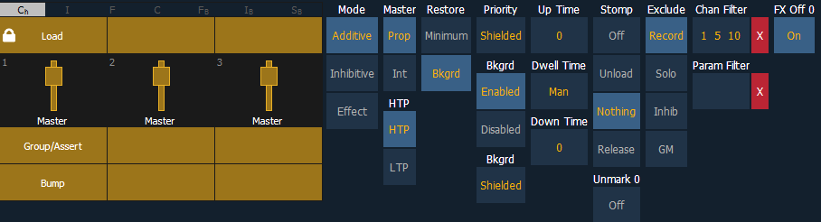

Faders can be mapped to a submaster in the fader configuration display, or by recording or loading a submaster. See Fader Configuration , Recording a Submaster , or Loading Submasters for more information.
If a fader has been configured for default mapping in the fader configuration display, the fader will receive its configuration from the Submaster List. Changes made to a submaster in the submaster list will be shared with any default mapping faders loaded with that submaster. If changes are made to a fader set to default mapping in the fader configuration display, those changes will also happen in the Submaster List. If set to Local, any changes made in the fader configuration display will impact only that instance of the content.

The following options are available when a fader is configured as a submaster:
You may define your submaster as additive (contributes to the live output), inhibitive (limits live output) or an effect submaster. Ion defaults to submasters being additive.
Additive submasters are indicated by a green LED and a yellow fader icon in the fader ribbon.
Inhibitive submasters display these indicators in red. Channels mastered by an inhibitive submaster are indicated with an “I” next to the intensity value in the channel display in live. Inhibitive submasters do not provide levels to the stage picture, they limit them (similar to a grandmaster). It is possible to put non-intensity parameters onto an inhibitive submaster, but it must be done from blind.
For more information about effect submasters, see Effects on Faders .
A fader can be assigned as a Master. When it is a master, its behavior as a Proportional Master or Intensity Master (I-Master) is drawn from this setting.
When a submaster is proportional, the slider will control all contents of the submaster (intensity and non-intensity parameters) when moved from zero. When a proportional sub is returned toward zero, channel will be returned to their previous level.
The bump button can be used to bump all values to their recorded levels in the submaster, or, by assigning timing values, fade the contents of the submaster up or out. Ion defaults to submasters as proportional.
When set to intensity master, the slider will control intensity only. The bump button can be used to preset (mark) non-intensity parameters stored to the submaster. If the bump is not pressed before the slider is moved, the slider will also fade the non-intensity-parameters to their recorded values. Once the non-intensity-parameters are at their end state, the slider only controls intensity. When dropped toward zero, controlled intensities will be faded toward zero.
When non-intensity parameters on a intensity master submaster have been marked using the bump button, the LED on its bump button will blink to tell you that the non-intensity parameters have been marked.
Pressing the bump button for an intensity master submaster that is currently bumped will release the non-intensity parameters using the bump button timing. Its bump button LED will also be turned off.
Note: For channels that have been set to GM Exempt in Patch, Intensity Master control will not impact the intensity of those channels. See {Attribute} Display and Settings for more information.
Intensity playback behavior can be set to HTP (highest takes precedence) or LTP (latest takes precedence). Non-intensity parameters are always LTP. Ion defaults all submasters to HTP. For more information on HTP and LTP see HTP vs. LTP .
Submasters can be placed into restore modes of minimum or background, which is the default. When a submaster is in the restore to background mode, the restore column of the submaster list display will be blank. When in minimum mode, 'Min' will display in the restore column.
The restore mode of background means that when the submaster is returned to zero, control will be restored to the background value, such as another submaster or a cue.
The restore mode of minimum means that when the submaster is faded down, control does not go to the previous background state but to the parameters’ minimum value.
Note: Priority was previously called Independent.
There are 10 levels of priority for submasters. 1 is the lowest and 10 is the highest. The default priority level is 4.
Submasters can be shielded, which means that their content is automatically made exclusive and can't be controlled by anything other than that submaster and park, including by manual control. Shielded has a higher priority than 10.
Channels stored to shielded submasters will display in yellow with a superscript ‘s’ beside it.
If channel parameters stored to shielded submasters were previously stored to cues or other submasters, those instructions will be ignored on playback.
If the same channels are assigned to more than one shielded submaster, control of those channels will be shared on either a LTP or HTP basis depending on the settings for the submasters.
Submasters can have their background states disabled. Background states are enabled by default. When enabled, the content of the submaster will act as a background or previous state for other cues and submasters.
When a submaster has its background state disabled, a “D” will be displayed in the Submaster List background column.
For Example:
Cue 1 has channel 10 at 25%. Submaster 1 is raised and has channel 10 at 50%. Submaster 2 is then brought up and has channel 10 at Full. When submaster 2 is lowered to zero, control will be returned to submaster 1. If submaster 1 is lowered to zero, control will return to cue 1.
Using the above example, if submaster 1 has its background state disabled, which makes its content unavailable as a background state, then when submaster 2 is lowered to zero, control would return to cue 1 and not to submaster 1.
Background can have a priority assigned to it. Background priority releases to the highest priority content that previously had ownership, provided that content has not be turned off or released.
There are 10 levels of background priority for submasters. 1 is the lowest and 10 is the highest.
This is the time for the submaster to fade from its home position to its target position (0 to Full if additive, Full to 0 if inhibitive). The default time is 0.
This is the time the submaster look will hold before starting the downfade. This can be set to a specified time, or to “Hold” or “Manual”. “Hold” time maintains the submaster values until the bump is pressed a second time. “Manual” time applies the submaster values only as long as the bump is held. The default is “Manual”.
This is the time for the submaster to fade from its target position to its home position. The default time is 0.
Stomp happens when all the content owned by a submaster is now being controlled by other targets. The submaster is being removed from the background , and once that happens, it would not be eligible to fade back. You can assign behavior that will happen when a submaster is stomped.
The following are Stomp Mode options:
When this option is on, marked content controlled by the submaster will automatically be released when the fader reaches 0%. When the bump button is next pressed, the submaster will fire. If this option is off, you would need to first press the bump button to reset the submaster before pressing the bump again to fire it.
Note: This option is for submasters that are set to Intensity Master.
Those exclusions include:
Channel and Parameter Filters can be used to allow only specified data to be played back. These are playback filters, and do not impact how data is recorded.
For submasters, channel and parameter filters can be set in the following areas:
Tap or click on {Chan Filter} to assign channels or groups. Tap or click on {Param Filter} to open a list of available parameters that you can filter.
Note: Filters will travel with their assigned submasters wherever they are mapped.
When a filter has been applied, an indicator will display in the fader ribbon. C will display for channel filter, and F is for parameter filter.
Press the red [X] to clear the channel or parameter filters listed.
Starts the effect when master fader is moved from 0, stops the effect when it is moved to 0. This is enabled by default.